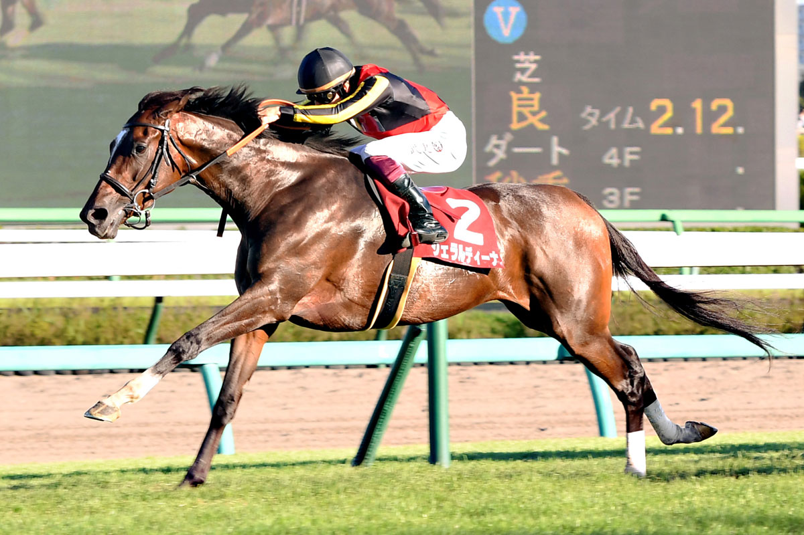
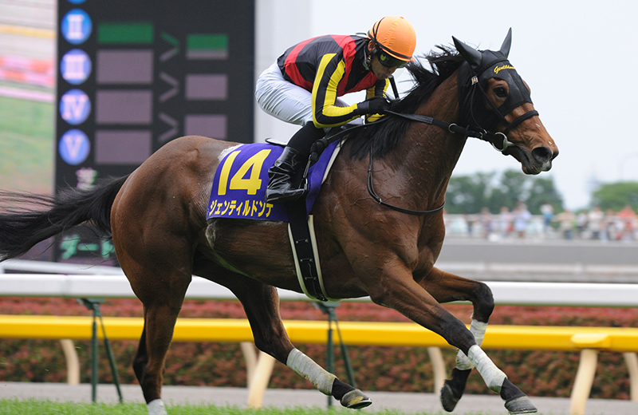

競馬とは

騎手が乗った馬により競われる競走競技
グレード分けがされておりGⅠ馬という最高峰になれるのはごくわずか
およそ年間7000頭以上のサラブレッドが生産され、
１年間で開催される国内GⅠの数は24レースという少なさ。
さらに出場するにも条件が厳しいためかなり狭き門となっている。

hello
word
競走馬は時速60～70キロで走るので、そのスピード感は見ている私達に凄まじい興奮と衝撃を与える。
世代最強をきめる日本ダービーはクラシックG1でも集う人が多い大人気のレース。
最近は、世界に対しても積極的に進出しており、日本競馬の強さを世界に広く知らしめるできごとも多数起きている。